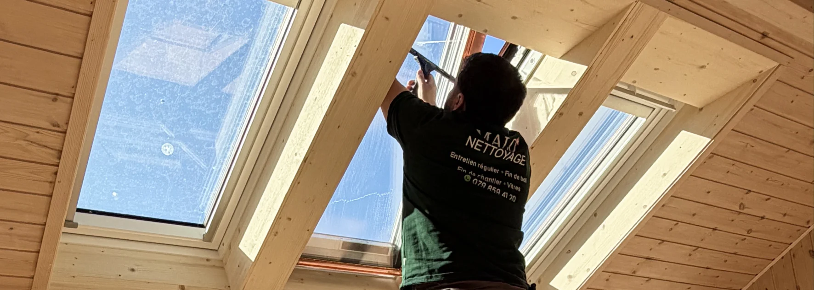

- Cause n°1 des traces : nettoyer en plein soleil (le produit sèche trop vite)
- Erreur courante : utiliser trop de produit ou un chiffon microfibre saturé
- Outils pros indispensables : mouilleur + raclette en caoutchouc
- Recette pro maison : eau tiède + quelques gouttes de liquide vaisselle
- Ordre correct : dépoussiérer les cadres avant de nettoyer le verre
Pourquoi vos vitres gardent des traces après le nettoyage
C'est l'un des sujets les plus frustrants du nettoyage : vous passez 20 minutes sur vos vitres, et le lendemain matin avec le soleil rasant, le résultat semble inchangé. Des traînées, des auréoles, des traces de doigts.
La bonne nouvelle : ce n'est pas une fatalité. Dans 90% des cas, le problème vient d'une (ou plusieurs) de ces 4 erreurs.
Erreur n°1 : nettoyer en plein soleil
C'est la cause numéro un des vitres striées. Quand le soleil chauffe le verre, le produit de nettoyage sèche en quelques secondes — avant même que vous ayez le temps de l'essuyer. Résultat : des auréoles inévitables.
Des vitres impeccables, sans effort
Intérieur et extérieur · Zéro trace garanti
Voir le service vitres →Erreur n°2 : utiliser trop de produit
Plus de produit ne veut pas dire plus propre. Au contraire : un excès de liquide laisse un film résiduel sur le verre qui attire la poussière et crée des auréoles en séchant. C'est particulièrement vrai avec les produits du commerce qui contiennent des tensioactifs.
La solution la plus simple et la plus efficace utilisée par les professionnels : quelques gouttes de liquide vaisselle dans un seau d'eau tiède. C'est tout. Pas de spray, pas de mousse, pas de produit miracle.

Erreur n°3 : utiliser un chiffon microfibre usé (ou une éponge)
Une éponge laisse des résidus. Un chiffon microfibre saturé en produits lessiviels redistribue la crasse plutôt que de l'absorber. Pour des vitres impeccables, il faut le bon outil.
Les professionnels utilisent deux outils : un mouilleur (sorte d'éponge plate avec une gaine en agneau) pour appliquer la solution, et une raclette en caoutchouc pour évacuer l'eau. C'est ce combo qui donne le résultat zéro trace.
Erreur n°4 : oublier les cadres et les rainures
Nettoyer le verre sans nettoyer les cadres, c'est comme laver le sol sans déplacer les meubles. La poussière et la saleté accumulées dans les rainures vont se déposer sur le verre propre à la moindre ouverture de fenêtre.
Ordre correct : d'abord les cadres et les rainures (aspirateur + chiffon humide), ensuite seulement le verre.
La technique pro en 4 étapes pour nettoyer ses vitres sans traces
- Dépoussiérez les cadres et les rainures avec un aspirateur ou un pinceau sec
- Mouillez le verre uniformément avec votre solution eau + quelques gouttes de liquide vaisselle
- Raclez de haut en bas en un seul mouvement continu, en essuyant la raclette après chaque passage
- Finissez les bords avec un chiffon microfibre sec pour absorber les dernières gouttes
Quand faire appel à un professionnel
Pour des vitres de plain-pied accessibles, les conseils ci-dessus suffisent largement. Mais certaines situations demandent un professionnel pour un résultat sécurisé et efficace :
- Vitres en hauteur (étage, immeuble, verrière)
- Encrassement important (calcaire épais, traces de chantier, peinture)
- Avant un état des lieux ou une mise en location
- Vitres de locaux professionnels ou de vitrines commerciales
FAQ – Nettoyer ses vitres sans traces
Quel est le meilleur produit pour nettoyer ses vitres sans traces ?
Les professionnels utilisent simplement de l'eau tiède avec quelques gouttes de liquide vaisselle. Ce mélange dissout la saleté sans laisser de film résiduel. Les produits du commerce contiennent souvent trop de tensioactifs qui créent des auréoles en séchant.
Faut-il nettoyer ses vitres avec du papier journal ?
C'est un mythe qui vient d'une époque où l'encre des journaux contenait des composants qui aidaient à polir le verre. Aujourd'hui, l'encre est différente et le papier journal laisse plutôt des résidus. Préférez une raclette ou un chiffon microfibre propre et sec.
À quelle fréquence faut-il nettoyer ses vitres ?
Pour une maison ou un appartement, 2 à 4 fois par an suffit. Pour des locaux professionnels exposés (vitrines, rez-de-chaussée en zone passante), une fréquence trimestrielle ou mensuelle est recommandée.
Le vinaigre blanc est-il bon pour les vitres ?
Il est efficace contre le calcaire, mais doit être dilué (1 volume de vinaigre pour 4 volumes d'eau) et utilisé avec parcimonie. Une utilisation pure et fréquente peut endommager les joints silicone et les cadres en aluminium.
Comment nettoyer des vitres très sales (chantier, peinture, calcaire) ?
Procédez en plusieurs étapes : d'abord un grattoir à lame pour éliminer les résidus solides, puis un produit anti-calcaire pour les dépôts minéraux, et enfin la technique classique (mouilleur + raclette). En cas d'encrassement sévère, l'intervention d'un professionnel est plus rapide et plus sûre.
En résumé
Nettoyer ses vitres sans traces ne demande pas de produit miracle : juste la bonne méthode et le bon timing. Évitez le plein soleil, dosez le produit, utilisez un mouilleur et une raclette, et dépoussiérez toujours les cadres avant le verre. Pour les vitres difficiles d'accès ou très encrassées, un professionnel garantit un résultat sécurisé.